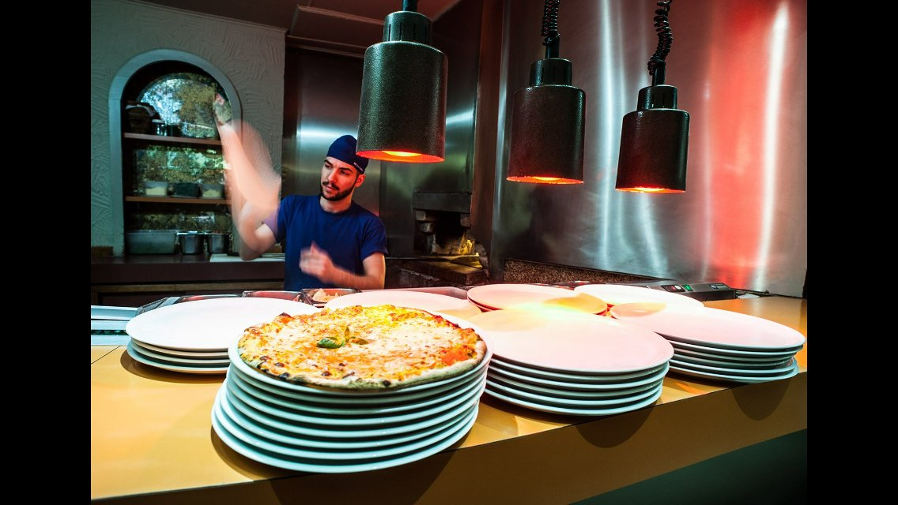
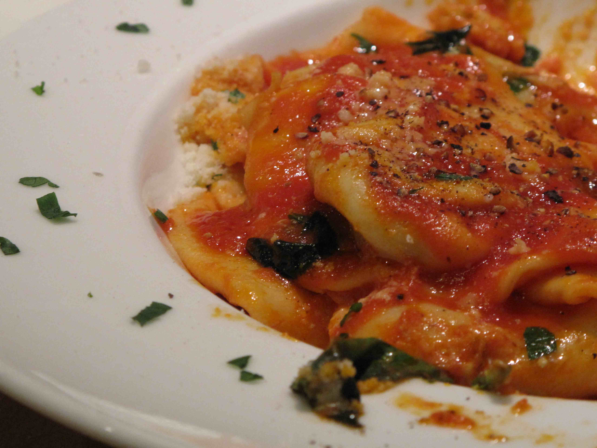
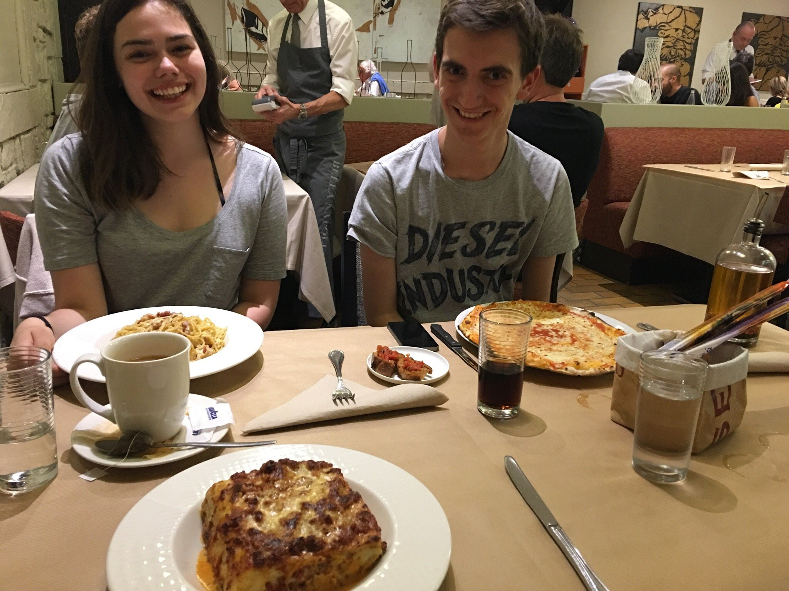

Une histoire de famille depuis 1976
La plus ancienne pizzeria de la ville. Pizzas cuites au feu de bois, pâtes fraîches faites maison et sauces artisanales — préparées par la famille Balestri, comme au premier jour.

La plus ancienne pizzeria de Luxembourg
L'une des premières pizzerias du Luxembourg, et aujourd'hui la plus ancienne de la ville. Depuis 1976, la famille Balestri prépare avec la même passion des pizzas au feu de bois, des pâtes fraîches faites maison et des sauces artisanales fidèles aux recettes napolitaines.
À deux pas de la Gare, une cuisine italienne authentique dans une atmosphère chaleureuse — un lieu où l'on revient, de génération en génération.
Envie d'une pizza cuite au feu de bois ?
Le four à bois n'a jamais cessé de brûler. Pâtes pétries chaque matin, sauces mijotées maison, recettes napolitaines transmises depuis 1976 — le vrai goût, sans raccourci.

Pizze
Paste & Specialità
Antipasti & Dolci

Comme à la maison, depuis 50 ans
Nappes blanches, accueil chaleureux, habitués de toujours et voyageurs de passage venus de la Gare voisine. On vient comme on est — la table vous attend.
Réservez par téléphone
+352 49 33 67La réservation se fait par téléphone — un vrai contact, comme il se doit. Nous vous garderons la meilleure table.
Horaires
Lundi et samedi midi : horaires à confirmer avec le restaurant.